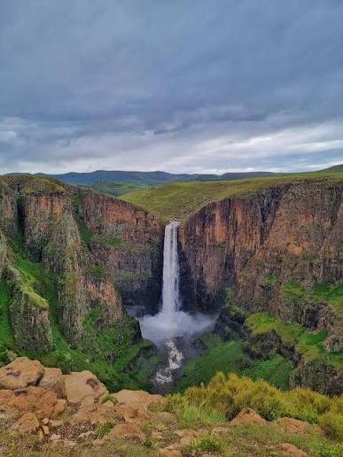
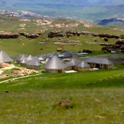

Thaba Bosiu
The historic sandstone plateau and natural fortress of King Moshoeshoe I, deeply sacred to the birth of the Basotho nation.

Katse Dam
An engineering masterpiece nestled deep in the Maloti Mountains, offering stunning high-altitude lake vistas.

Maletsunyane Falls
A breathtaking 192-meter single-drop waterfall near Semonkong, famed for its misty gorge and dramatic views.

Sehlabathebe National Park
A UNESCO World Heritage site known for its unique rock formations, pristine alpine flora, and secluded wilderness.

kome Caves
Fascinating historical rock shelters rich in cultural heritage and local folklore near Maseru.

Afriski Maliba Lodge
Africa's premier mountain skiing destination and luxury highland retreats offering year-round alpine adventures.